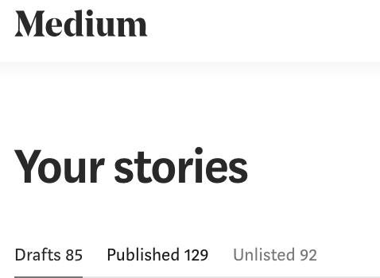
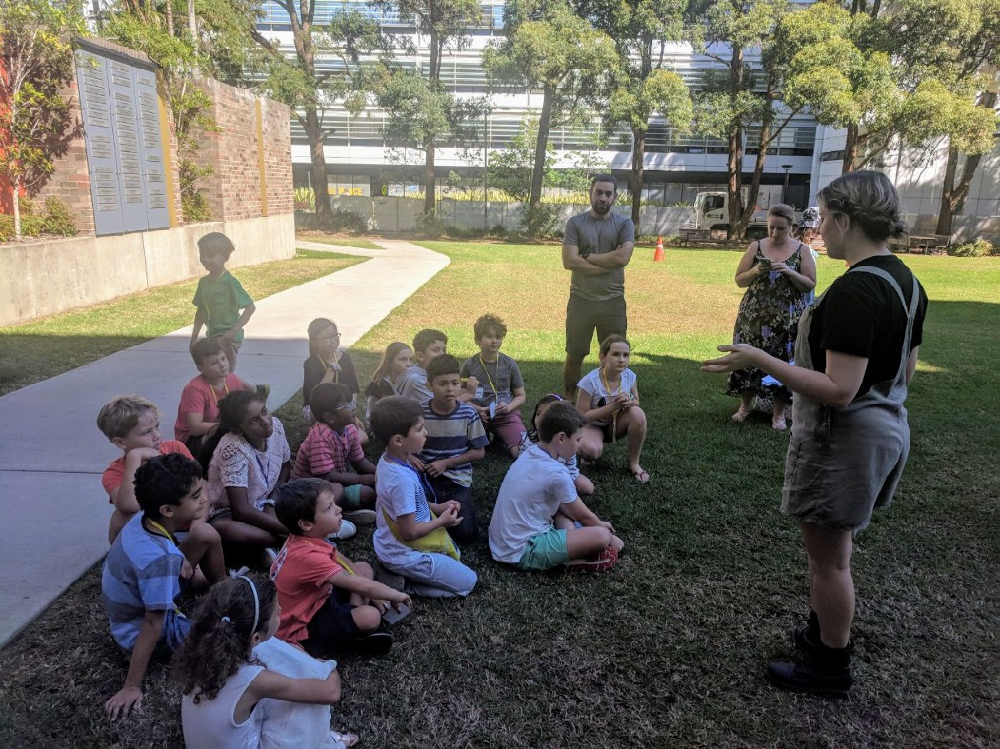
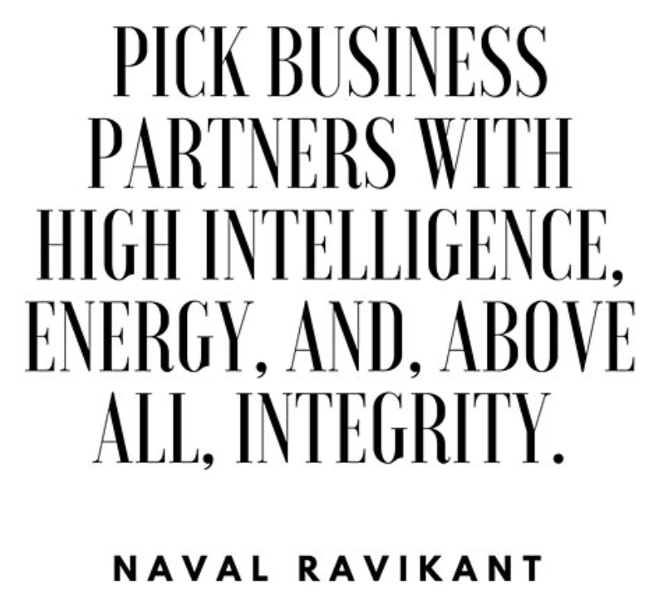

Q: Who am I and what have I accomplished?
I always struggled to code because it was a self-imposed barrier that I thought I could never get over. I failed my initial CS college classes and never thought I would be coding for a living. But I knew I wanted to build so I continued to self-teach myself and work in startups where I could continue my growth and learning.
Since then I’ve led two early stage startups as the lead Frontend Engineer and scaled one to 20,000 MAU. Initially I was very lost but I am grateful for the opportunities those founders gave me and ended up being responsible for things with design collaboration, style guide, documentation, quality assurance, testing and heavily involved in all feature sprints.
You can learn more about my work by checking out the below.
Three reasons why you should hire me.

Multiple hats
Am very aware of the demands of a startup and the necessity as an engineer to be flexible between Front end and Back end and helping out wherever is necessary. It can be tough at times but I understand that if the people are all aligned on what outcomes and north star they are moving towards, nothing is impossible.
Huge Substack fan (& an active customer!)
I am subscribed to over 10 free Substack's + 1 paid which makes me an active user and I have not been disappointed with the quality of writing the Substack authors create. I have never regretted opening a Substack and am always sure to bookmark them. Flow State is one of my favourite ones and have discovered a lot of cool music from it 🎶.
Like Chris said, Whenever I decide to read something later, I almost never regret it.
I am currently in the process of writing a few articles for the my Substack and drafting up a few articles on sleep and a few book summaries.
What matters in a startup
In the famous fashion of the SF Guru, this is what I truly believe in after working for several startups:
Pick Partners With Intelligence, Energy and Integrity. You can't compromise on any of these three - Naval Ravikant.

After working in several startups, I believe a startup thrives and succeeds ultimately because of the people. Product market fit matters without a doubt but being able to effectively lead and communicate with internal and external stakeholders is the upmost priority. Then make sure you work with people who are more skilled and experienced in their domains. Combine all of those and you have a great team and company. From reading / listening to the founders of SubStack, my intuition tells me this is the case.
Where I see Substack going
Democratising writing for the masses.
As Patreon did for Youtube Creators.
Twitch did for streamers.
Udemy did for education.
Bandcamp did for music.
What Substack is doing is really powerful and I think it is of significant value where the writers can start to voice their thoughts and be able to earn a living compared to the current high bar of being published in mainstream publication. All the aforementioned companies were seen as crazy (I.e. who would want to stream games for a living and get paid... blasphemous...) but they have become a reality and people are able to pursue their creative passions. I think that is true meritocracy and a wonderful mission to be. a part of.
Thanks for your time and for reading.